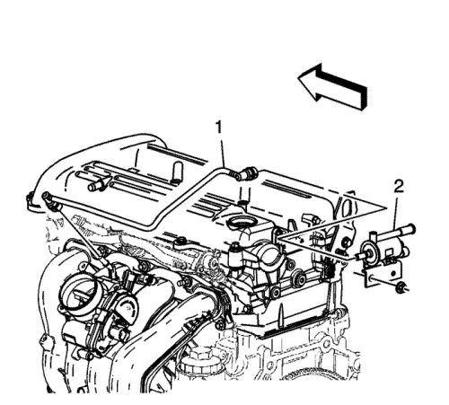
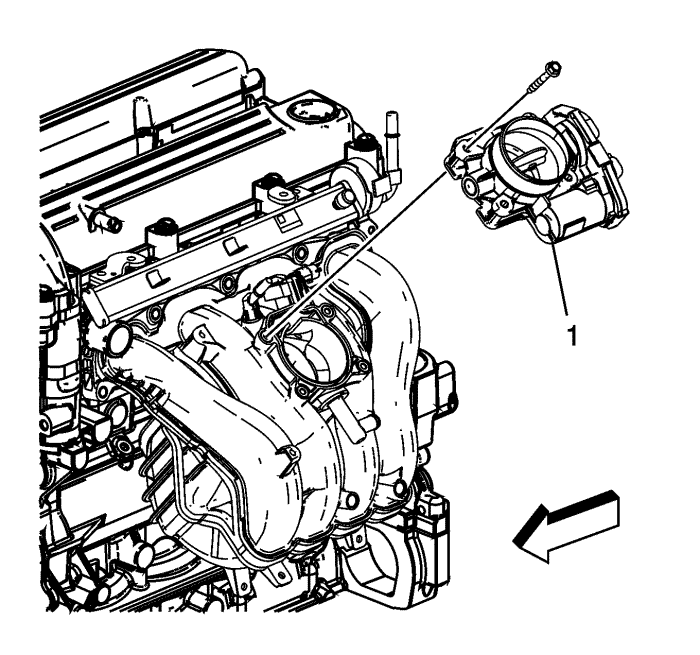
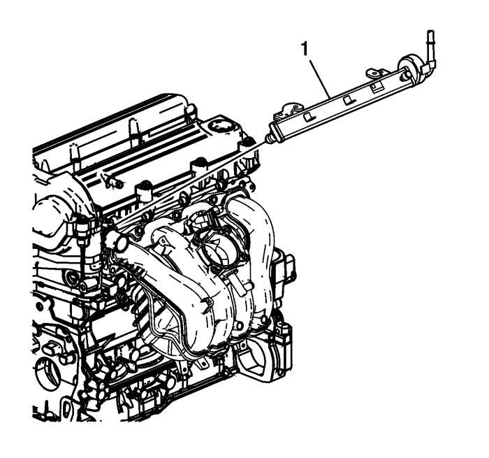
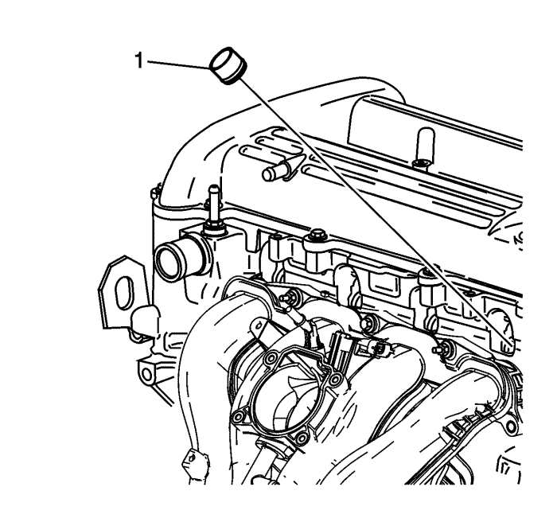
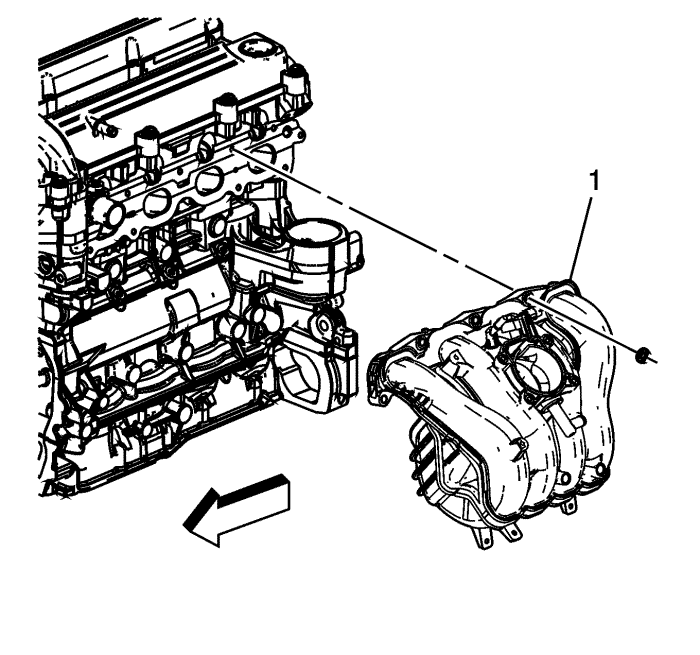

Atención: Nunca intente extraer el colector de admisión de un motor caliente, deje que el motor se enfríe primero a temperatura ambiente. El colector de admisión puede dañarse, si se retira estando caliente el motor.
- Desmonte el tubo de la válvula (1) del depósito de emisión de vapores (EVAP).
- Retire la válvula del recipiente del EVAP (2).

- Extraiga los tornillos del cuerpo del acelerador.
- Desmontar el cuerpo de mariposa (1).

- Retire los conductos de combustible y el clip. Desmonte la rampa de inyectores de combustible (1).
- Desmonte la rampa de inyectores de combustible. Consultar Sustitución del inyector de combustible .

- Retire los aislantes de las puntas de los inyectores de combustible (1) y tírelos.

- Desmonte los tornillos y las tuercas de sujeción del colector de admisión.
- Desmonte el colector de admisión (1).
- Desmonte la junta del colector de admisión, si fuera necesario. Si no está dañada, la junta puede utilizarse de nuevo.
- Si fuera necesario sustituir el colector de admisión, transfiera el cuerpo del acelerador al nuevo colector.